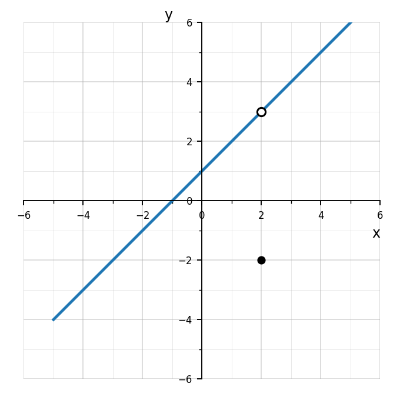
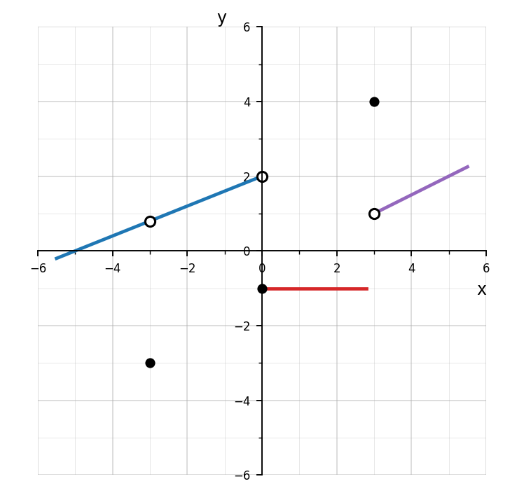

Section 1.5 Station 1
Question 1
Use the graph to determine the left-hand and right-hand limits as \(x\to -1\).

Question 2
Use the graph to determine \(\lim_{x\to 2} f(x)\), \(f(2)\), and whether the function value affects the limit.

Question 3
Compare these situations: a removable discontinuity, a jump discontinuity, and a vertical asymptote. Explain how limits behave differently in each case.
Question 4
Use the graph to write a complete limit analysis at each special \(x\)-value shown. Include left-hand limits, right-hand limits, function values, and whether each two-sided limit exists.
